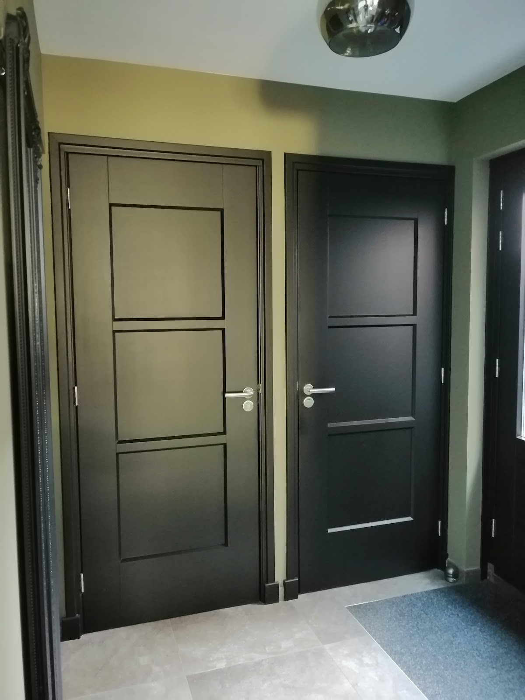
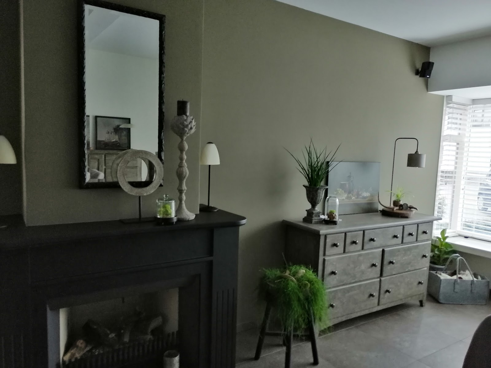

Binnenschilderwerk
Muren en plafonds, deuren, kozijnen en trappen. Vers schilderwerk geeft uw interieur direct een andere uitstraling en beschermt tegen vocht, slijtage en schimmel. Zo blijft uw huis langer mooi en gezond.
Roy denkt mee over kleur, afwerking en onderhoud, zodat het past bij uw woning en uw smaak.